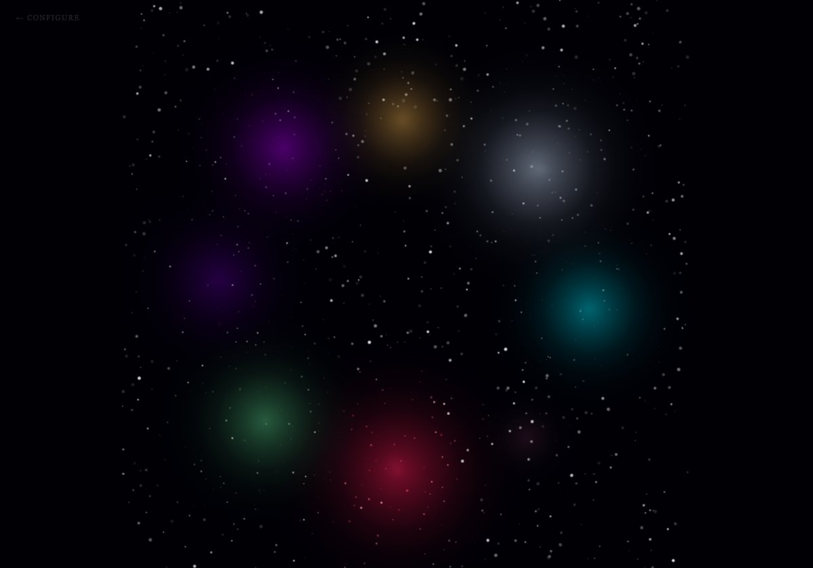
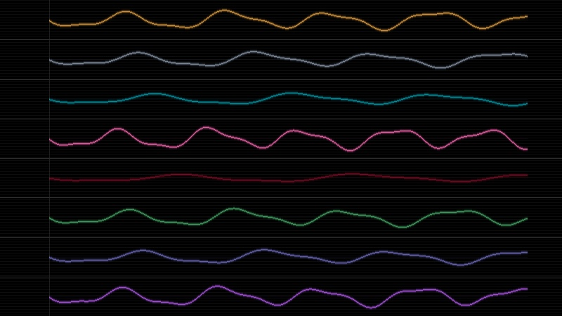
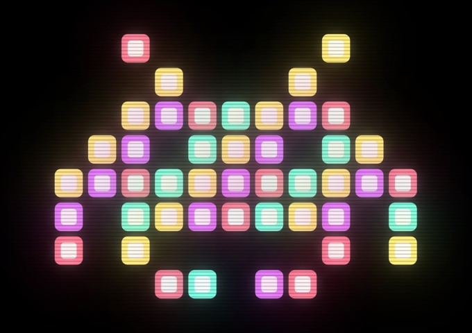

Selected Projects
Transit Nebula I
A living generative artwork driven by astrological transits. Your birth chart against today's sky, rendered as a nebula in real time. Every person's is unique. Every day it changes. No two people share the same image.
Explore Project →
Making of
Transit Nebula
The iterations, experiments, and companion pieces built during development — from the first Canvas 2D sketch through four WebGL versions to the astrological engine. The process as artifact.
View Process →
Transit Signal
Eight astrological axes rendered as oscilloscope waveforms. Your birth chart against today's transits — amplitude, frequency, and luminance driven by planetary aspect scores in real time.
View Signal →
Invader
Ten generative variations on the Space Invader form. Each piece renders the same iconic alien through a radically different visual language — neon, glitch, constellation, crystal, organic, matrix, wireframe, watercolor, circuit, plasma.
View Series →